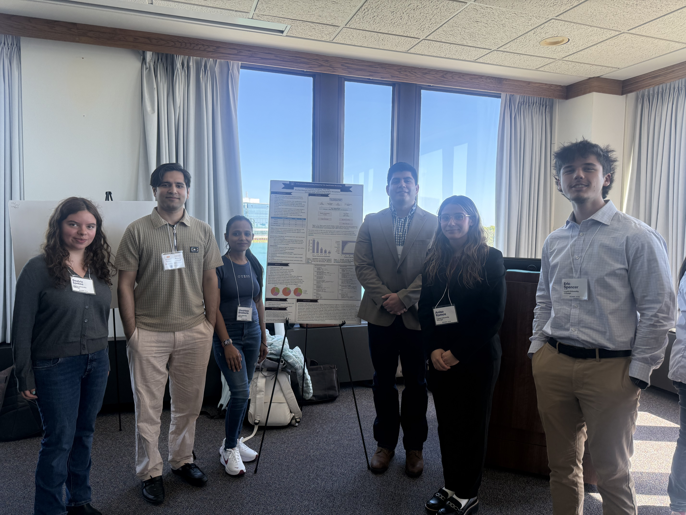
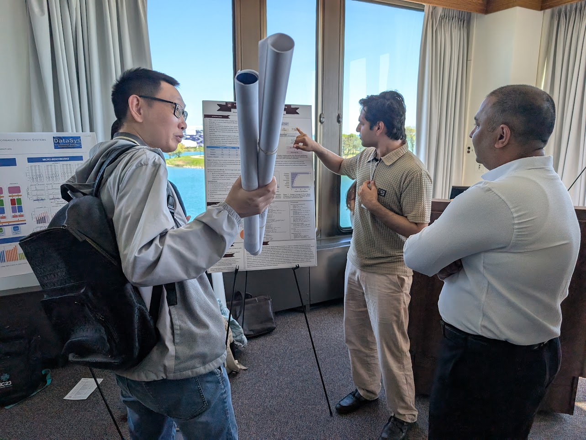
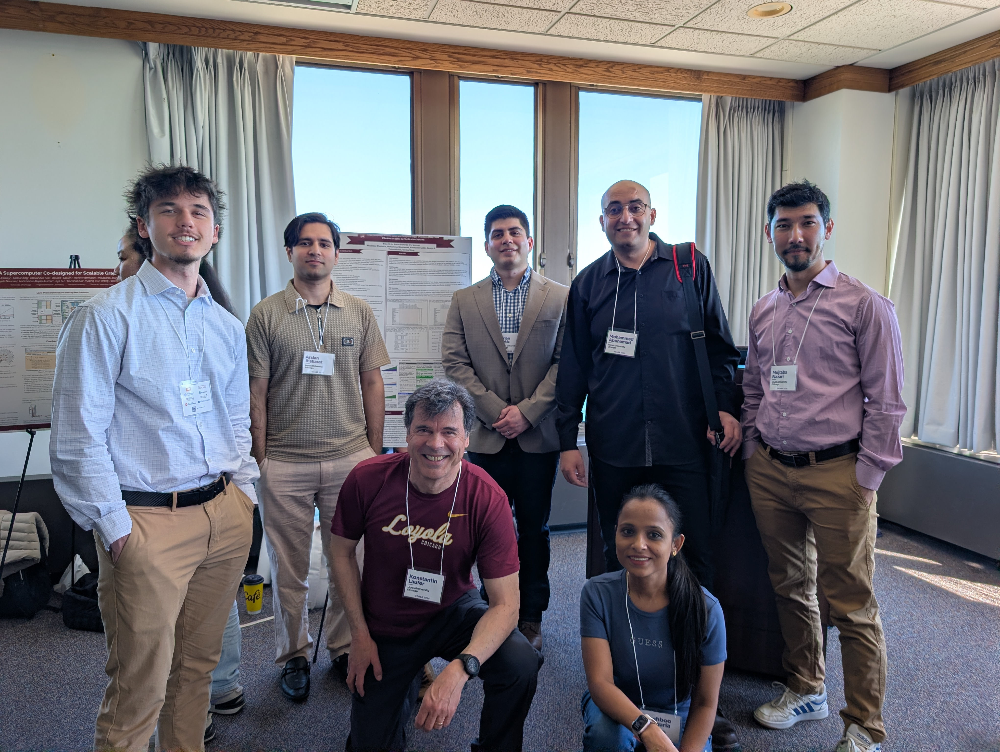

Presented Two Posters at GCASR 2026¶
On May 11, 2026 we presented two posters at the 13th Greater Chicago Area Systems Research Workshop (GCASR 2026).
A Structured Benchmarking Dataset for TLA+ Specification Reasoning¶
Authors: Arslan Bisharat, Eric Spencer, Khushboo Bhadauria, Anisa Ramos, Brian Ortiz, Mohammed Abuhamad, Konstantin Laüfer, TaiNing Wang, George K. Thiruvathukal
This is a currently working paper.
Large Language Models (LLM) and Temporal Logic of Actions (TLA): How Effective are LLMs for Verification Systems¶
Authors: Brian Ortiz, Arslan Bisharat, Eric Spencer, Khushboo Bhadauria, Anisa Ramos, Mohammed Abuhamad, Konstantin Laufer, TaiNing Wang, George K. Thiruvathukal


